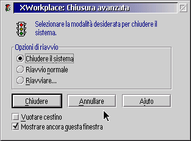
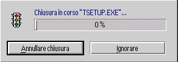

Nota importante: la &xshutdown; Š inizialmente disabilitata per evitare confusione. Ô necessario abilitare la &xshutdown; dal nuovo oggetto "Impostazioni &xwp;".
Dopo aver abilitato la &xshutdown;, selezionando "Chiusura" dal menu contestuale della Scrivania verr… avviata la procedura di chiusura di &xwp; invece di quella di &os2;.
Dopo aver selezionato "Chiusura", apparir… una finestra di conferma come questa:

Le funzioni principali della &xshutdown; sono:
Si possono creare delle opzioni di riavvio personalizzate, per esempio
riavviare direttamente una data partizione.
Queste funzioni sono spiegate in dettaglio premendo il bottone "Azioni" nella pagina relativa
nel blocco impostazioni della Scrivania.

DEVICE=X:\OS2\BOOT\DOS.SYS
dove X: Š il disco di avvio di OS/2.
Ô possibile configurare (o anche disattivare) la Chiusura avanzata dalla pagina apposita nel blocco impostazioni della Scrivania.
Se si Š interessati al funzionamento interno della &xshutdown;, si legga
la pagina relativa nel capitolo "Struttura interna di &xwp;".